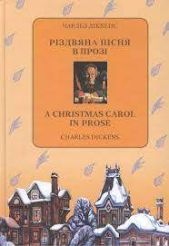
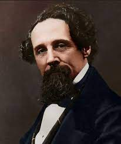

Моя улюблена книга
Назва книги: Різдвяна пісня в прозі
Автор: Чарльз Діккенс
Розширений опис книги
Ебінезер Скрудж дуже скупий старий, який не знає нічого про радість і пристрасно любить гроші. Він має намір провести Різдво зануреним у роботу, тому відмовляється від будь-яких запрошень, навіть від свого племінника. Йому огидні співаючі пісні хлопчики й збирачі. Він всіх проганяє. По дорозі додому з ним відбувається немислимий випадок. Скрудж зустрічає свого компаньйона, який помер 6 років тому перед Різдвом. Той розповідає Скруджу, як він страждає за скоєні гріхи всього життя. Він покараний за те, що не вчинив жодного доброго вчинку. Компоньон говорить Скруджу, що троє духів прийдуть захистити його від подібного страшного покарання. З’являється перший дух і показує прожиті дні Ебінезера з самого дитинства. Показує його безтурботне дитинство, закохані юнацькі роки і втрату коханої через прагнення накопичити побільше грошей. Другий дух показує Скруджу як всі навколо радіють Різдву, даруючи подарунки і піднімаючи тости. Більшість з них бідні і зовсім не страждають через це. Дух показує і сім’ю племінника. Вони дуже раді і продовжують добре ставитися до Ебінезера, попри його жадібність. Третій дух показує можливе майбутнє Скруджа і його смерть, до якої люди ставляться байдуже, а деякі навіть раді цьому. Він благає духу дати йому шанс. Скрудж заново проживає останні дні і веде абсолютно інше життя. Заслуговує любов і повагу всіх оточуючих. Здійснює багато добрих вчинків.
Про автора
Автор: Чарльз Діккенс
(7 лютого 1812, Лендпорт — †9 червня 1870, Гейдсгілл)
Чарльз Діккенс (англ. Charles Dickens, *7 лютого 1812, Лендпорт — †9 червня 1870, Гейдсгілл) - письменник вікторіанської епохи, який не тільки відобразив її у своїх творах проблеми англійського суспільства, а й намагався їх розв'язувати.